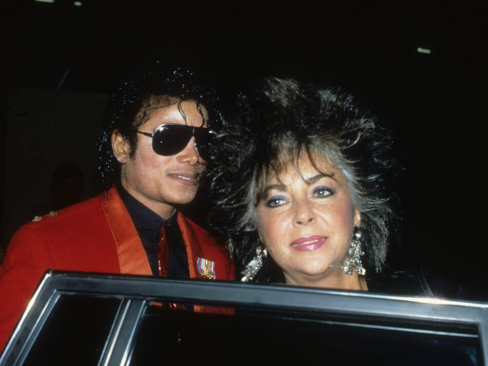
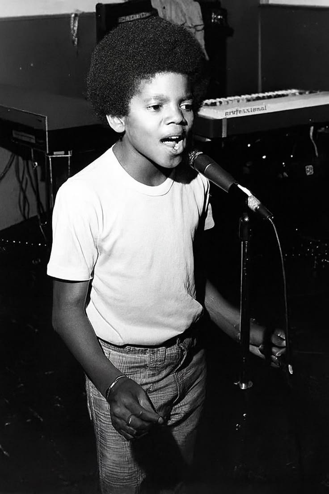
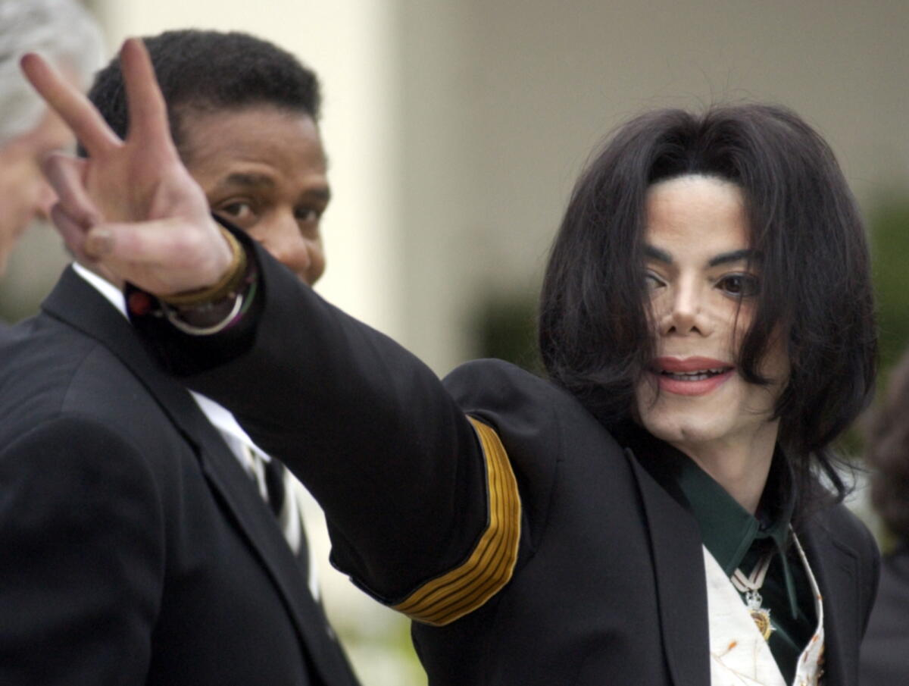

Conocido como el rey del pop, Michael Jackson no fue un artista más, se convirtió en un fenómeno global que, a través de su música, transformó la industria del entretenimiento y dejó una marca imborrable en la música y en la cultura en general, no solo en el género pop. El título de rey del pop se lo otorgó su amiga Elizabeth Taylor cuando lo presentó en una entrega de premios como “el auténtico rey del pop, rock y soul”, Jackson le hizo honor a este título con una carrera de más de cuatro décadas llena de innovación, carisma y una infinidad de récords. Desde Señal Colombia recorremos su historia, sus hitos, sus aportes a la industria musical y recordamos aquellas canciones y videoclips que marcaron su legado, así como las controversias que lo rodearon constantemente.
Michael Joseph Jackson nació el 29 de agosto de 1958 en Gary, Indiana, fue el octavo de diez hermanos y su infancia estuvo marcada por la música, su madre, Katherine Scruse, tocaba el clarinete y alternaba con un trabajo en Sears para poder mantener a la familia, mientras que su padre, Joe Jackson, era guitarrista de una banda local. Joe Jackson vio el talento de sus hijos y formó la banda The Jackson 5 en 1964, con tan solo seis años el pequeño Michael se convirtió en el vocalista principal de la agrupación, la cual firmó con Motown en 1969 y alcanzó la fama con éxitos como I Want You Back y ABC. Ambos sencillos lograron un hito histórico: lograron llegar a lo más alto del listado Billboard Hot 100, un récord para una banda que apenas iniciaba su carrera musical.


La música de Jackson no se encasilló en un solo género. Su primer álbum como solista con el sello Epic, Off the Wall (1979), fue una mezcla de pop y funk producida por Quincy Jones, y aprovechó el auge de la música disco de esos años [1][3]. Con la canción «Beat It» se acercó al rock, con un solo de guitarra de Eddie Van Halen [1]. Años después, su álbum Dangerous (1991) combinó R&B, funk, gospel, hip-hop, rock, música industrial y clásica [3]. Esa variedad ayuda a explicar por qué su música llegó a públicos tan distintos en tantos países. En el escenario, su sello más reconocible fue el baile. El paso que lo hizo famoso fue el moonwalk, que mostró en público por primera vez el 25 de marzo de 1983 en el Pasadena Civic Auditorium, durante la grabación del especial «Motown 25». El resto del país pudo verlo casi dos meses después, el 16 de mayo de 1983, cuando la cadena NBC emitió el programa [7]. Conviene aclarar que Jackson no inventó el movimiento: el bailarín Jeffrey Daniel se lo había enseñado unos tres años antes, pero el lo hizo a su estilo único de bailar [3]. Su mérito fue popularizarlo hasta volverlo inseparable de su imagen. En esa misma presentación estrenó también su guante brillante en un escenario [8]. Antes de eso ya había popularizado el llamado «baile del robot», que usó en 1973 durante una interpretación de «Dancing Machine» [3].
Britannica destaca que Jackson ayudó a derribar barreras raciales para los artistas negros en una época en que la radio estadounidense estaba segregada y a los músicos afroamericanos les costaba que MTV transmitiera sus videos en horarios de alta audiencia [1]. Según la misma enciclopedia, «Beat It» contribuyó a romper la separación artificial entre artistas negros y blancos, tanto en la radio como en el naciente formato del videoclip [1].
Jackson también se involucró en causas solidarias. En 1985 escribió junto a Lionel Richie «We Are the World», la canción del proyecto USA for Africa, destinada a combatir el hambre en África [1]. Se grabó el 28 de enero de 1985 con más de 45 de los cantantes y compositores más populares de la época [9]. Según algunas estimaciones, el proyecto recaudó más de 75 millones de dólares para ayuda humanitaria [3]. En 1992 fundó la Heal the World Foundation, que realizó acciones como el envío aéreo de suministros a Sarajevo, programas de educación contra el abuso de drogas y alcohol y donaciones de millones de dólares a niños necesitados [10]. En 2018 recibió, a título póstumo, el premio Legacy Award de la Elizabeth Taylor AIDS Foundation por su servicio humanitario [3].


La piel de Jackson había sido oscura durante su juventud, pero a partir de mediados de la década de 1980 se volvió más pálida gradualmente. Esta transformación provocó una amplia cobertura de los medios, incluida la especulación de que se estaba blanqueando la piel. El dermatólogo de Jackson, Arnold Klein, declaró que en 1986 diagnosticó a Jackson con vitíligo, una condición caracterizada por manchas de la piel que perdían su pigmento.Jackson comenzó un tratamiento para blanquear la piel y cubrir las manchas desiguales de color a base de cremas experimentales. También recurrió a usar cosméticos para cubrir las manchas, tales como maquillaje de tonos más claros que su tono natural de piel. Durante la promoción de su álbum Thriller de 1982, Jackson optó por usar un guante blanco cubierto de diamantes para cubrir las manchas de su mano. Este accesorio se convertiría en algo característico de sus presentaciones en vivo y entregas de premios durante toda su trayectoria. En 1993, durante una entrevista con Oprah Winfrey se le cuestionó sobre el tono de su piel, a lo que respondió «Que yo sepa, no existe el blanqueamiento de la piel. Nunca lo he visto, no sé qué es, yo tengo un trastorno cutáneo hereditario, que destruye la pigmentación de la piel, y es algo que no puedo evitar. No lo puedo controlar. Está en mi familia, mi padre dice que es de su parte y uso maquillaje para igualar el tono desigual de mi piel». La entrevista de Winfrey a Jackson fue vista por 62 millones de estadounidenses y rompió varios récords televisivos.[10] Poco después de la muerte de Jackson, se encontraron tubos de hidroquinona y monobenzona en la casa de Jackson, cremas con agentes blanqueadores de la piel usadas en adultos que padecen de vitíligo en más del 50% de sus cuerpos. La autopsia de Jackson confirmó que tenía vitíligo.



La figura de Jackson no puede entenderse sin mencionar las polémicas que la rodearon. En 1993 fue acusado de abuso por un niño de 13 años, y el caso civil se resolvió con un acuerdo fuera de los tribunales [1]. En 2003 fue arrestado por una acusación distinta, y tras un juicio de unas catorce semanas fue absuelto de todos los cargos en 2005 [1][3]. En 2019, el documental Leaving Neverland recogió el testimonio de dos hombres que aseguran haber sido abusados por él cuando eran niños. Britannica aclara que ninguno de ellos fue parte de los casos judiciales de 1993 y 2005, y su familia y herencia han rechazado esas acusaciones [1][3]. Estos hechos forman parte del debate público sobre su figura. Por eso es importante presentarlos como acusaciones y no como hechos probados. Britannica resume su legado como problemático pero, a la vez, innegablemente monumental [1].
Michael Jackson murió el 25 de junio de 2009, a los 50 años, tras sufrir un paro cardíaco en su casa de Los Ángeles [11]. Se preparaba entonces para una serie de 50 conciertos en Londres, de la que quedó el documental This Is It, estrenado en octubre de 2009 [1]. El forense calificó su muerte como homicidio, causado por una combinación de sedantes y propofol, un anestésico [1]. En 2011, su médico personal fue declarado culpable de homicidio involuntario [1]. El 7 de julio de 2009 se realizó un homenaje público en el Staples Center de Los Ángeles [1]. Años después de su muerte se publicaron álbumes póstumos como Michael (2010) y Xscape (2014) [3]. Su música, sus videos y su forma de bailar siguen siendo referencia obligada en la cultura popular.